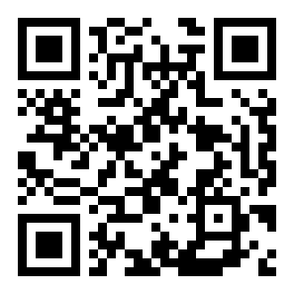
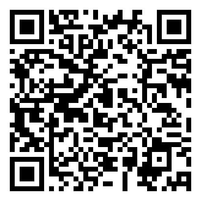
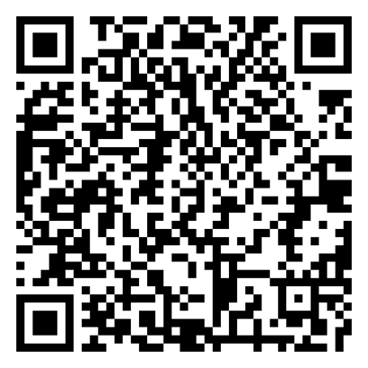

🚀 Autenticación, autorización y gestión de sesiones
La autenticación y la autorización constituyen el primer perímetro de defensa de cualquier aplicación web: antes de poder proteger los datos, es necesario establecer con certeza quién es el usuario que interactúa con el sistema y qué acciones tiene permitido realizar. Según informes recientes, una gran parte de las filtraciones de datos involucran credenciales comprometidas o mecanismos de autenticación débiles.
En esta OVA revisaremos las diferencias conceptuales entre autenticación y autorización, los flujos modernos de autenticación (incluyendo JWT), buenas prácticas de gestión de sesiones y mecanismos de autenticación multifactor. El objetivo es que puedas aplicar estas prácticas en proyectos reales y reducir la superficie de ataque relacionada con identidades y sesiones.
✨ Objetivo práctico: al finalizar, podrás diseñar e implementar un sistema de autenticación y gestión de sesiones con controles básicos de seguridad. 🔐
🎯 Objetivos de aprendizaje
- 🔍 Diferenciar con precisión los conceptos de autenticación y autorización.
- 🛡️ Comprender los principales mecanismos de autenticación modernos, incluyendo JWT y MFA.
- 🔧 Aplicar buenas prácticas de gestión segura de sesiones en aplicaciones web.
📝 Actividad 1: Implementación de un sistema de login con sesiones seguras
Desarrolla un servidor de login en Node.js (Express) que implemente contraseñas almacenadas con hash bcrypt, regeneración del identificador de sesión tras login exitoso, cookies con flags HttpOnly y Secure, y expiración automática de sesión tras 20 minutos de inactividad.
📝 Producto esperado: Código fuente con evidencia de configuración de sesión y un breve informe explicando las decisiones de seguridad.
👥 Actividad 2: Diseño de un sistema de roles
En equipos de 3, diseñen el esquema de autorización para una plataforma de gestión académica con al menos cuatro roles (estudiante, docente, coordinador, administrador). Especifiquen acciones y reglas de acceso.
📝 Producto esperado: Matriz de permisos y justificación técnica de la elección de permisos por rol.
✔️ Evaluación
Comprueba lo que has aprendido. Selecciona la respuesta correcta para cada pregunta.
📖 Recursos para profundizar
Para ampliar tu conocimiento, te recomendamos explorar los siguientes recursos:
-
🔐 Introducción a JSON Web Tokens (JWT)
Artículo práctico sobre qué es un JWT y cómo usarlo de forma segura.
Ir al recurso
-
🧵 Gestión de sesiones — OWASP
Guía de buenas prácticas para gestión de sesiones y cookies.
Ir al recurso
-
📲 Autenticación multifactor — INCIBE
Guía divulgativa sobre el uso y beneficios de MFA.
Ir al recurso